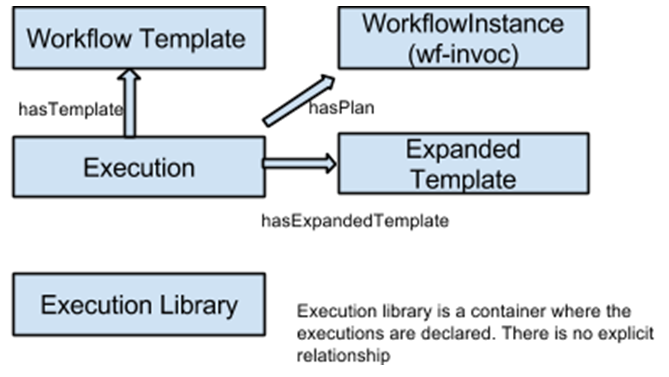

Towards data narratives for WINGS workflows
Mon, 04/10/2017 - 08:08 — adminPublished papers often provide insufficient information about the data, protocols, software, and overall method used to obtain the new results in computational experiments. A major challenge in reproducibility is the lack of appropriate support for authors to capture exactly how experiments were performed. Once the work is finished, authors write an account in their articles by retrospective reconstruction of the work that was actually done, relying on their memory and notes kept along the way. However, we should have automated tools that ensure that the descriptions that are written about computational experiments are in fact accurate and provide enough detail for transparency and reproducibility.
In our previous work we added to WINGS the functionality to capture the full provenance and specification of scientific workflows. Now we have used that information to generate data narratives of results, i.e., textual explanations that describe them at different levels of granularity.
WINGS available as a Docker image
Mon, 04/10/2017 - 08:03 — admin
Docker is a virtualization software that helps replicating the environment and dependencies of any software tool. Thanks to Docker, we can execute a given software independently of the computing environment we used to set it up.
In WINGS, we use Docker to facilitate running components without having to install them in our servers previously. In addition, we have adapted WINGS itself to run as a Docker image as well. You can find more details on how to use WINGS as a Docker container in the following online tutorial.
Cluster computing with Wings
Sun, 05/08/2016 - 22:07 — adminWings can now (again) work with Pegasus and Condor.
You can find instructions on how to compile WINGS with condor support here:
Instructions on compiling WINGS with pegasus support
Wings is now integrated in the Disk portal
Fri, 04/01/2016 - 01:34 — admin
The DISK project (automated DIscovery of Scientific Knowledge) aims to develop a novel approach to automate the hypothesize-test-evaluate discovery cycle with an intelligent system that a scientist can task with lines of inquiry to test hypotheses of interest. DISK extends the existing WINGS intelligent workflow system for scientific data analysis, applying it to multi-omics.
DISK has four major research objectives:
1) Representing hypotheses and associated evidence and confidence values;
A new release of the Wings provenance export is online!
Fri, 04/01/2016 - 01:30 — adminOn previous releases, Wings introduced an export to OPMW that allowed to represent scientific workflows and their provenance as Linked Data. After the latest releases of Wings, the mapper was adapted to the newer version of the workflow system. Now workflow executions are stored in a local execution library, which makes it easy to access them independently. In addition, each execution is associated with its original template, its workflow instance and expanded template:

New Version of Wings Released (4.0 Development Version)
Thu, 09/11/2014 - 07:30 — adminMore details can be found at /node/17664
Workflow Ecosystems and Wings
Wed, 07/02/2014 - 06:47 — adminWings is now part of the WEST workflow ecosystem, which is a collection of workflow tools that interoperate to visualize, analyze, design, execute and explore scientific workflows.
Wings is part of DARPA open source software projects for Big Data
Thu, 02/20/2014 - 15:22 — adminWings semantic workflow system is part of the original collection of DARPA open source software projects for big data.
New version of Wings Released (Source Code)
Fri, 10/04/2013 - 14:25 — adminSource code can be found at:
https://github.com/IKCAP/wings
Semantic Workflows for Cancer Clinical Omics
Tue, 06/25/2013 - 06:50 — adminIn collaboration with the Knight Cancer Institute at the Oregon Health and Science University, we are using Wings workflows to annotate patient sequence variants obtained through clinical DNA sequencing.